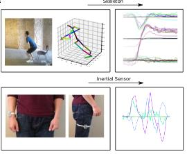
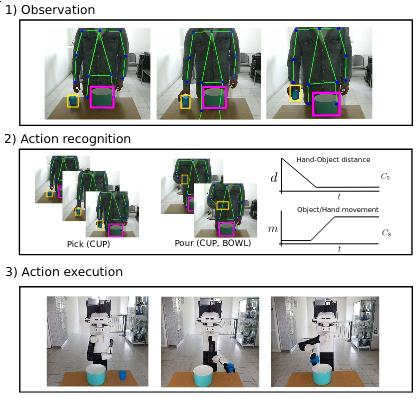
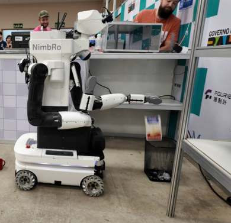
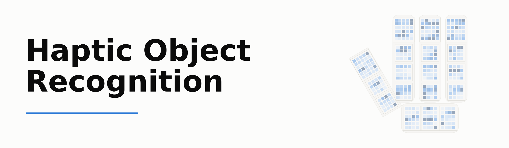
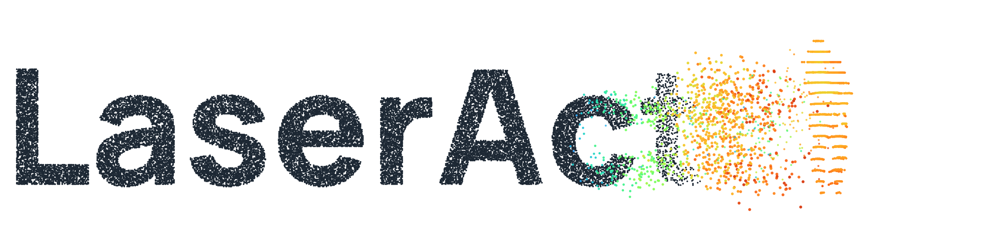

Research Topics

Multi-Modal Perception and Action Understanding
Recognizing and segmenting human actions in time-series data such as videos, inertial measurements, Wi-Fi CSI fingerprints, and skeleton sequences, so that robots understand and respond to human activities robustly and naturally.
SL-DML (ICPR 2020) · Gimme Signals (IROS 2020) · Skeleton-DML (WACV 2022)

Learning from Human Behavior
Enabling robots to acquire new skills from human demonstrations and multi-modal observations rather than explicit programming, so that non-experts can teach robots new tasks.
Simitate (IROS 2019) · Robotic Imitation by Markerless Visual Observation (ICARSC 2020)

Integrated Service Robots in the Real World
Building complete domestic service robots that combine perception, task planning, mobile manipulation, and human-robot interaction, validated in international competitions such as RoboCup@Home and the ANA Avatar XPRIZE as real-world benchmarks.
Adaptive Domestic Service Robotics (GRC 2026) · RoboCup@Home 2024 OPL Winner NimbRo (RoboCup 2024)
Datasets

Haptic Object Recognition
A Full-Hand Tactile Skin Grasp Dataset with an Allegro Hand
A dataset of in-hand grasps recorded with an Allegro Hand fully covered by a XELA uSkin tactile skin: 368 tri-axial magnetic taxels on 18 sensor pads spanning fingertips, phalanges, and palm, sampled at ~100 Hz. It contains 14 grasps of 9 YCB objects across two recording sessions on different days, each synchronized with hand proprioception, RGB video, and scripted grasp-phase annotations. The release adds a machine-readable estimate of the taxel-to-pad mapping, a leakage-free frame-level object-recognition benchmark with cross-session and cross-pose protocols, an interactive web viewer, and the full bag-to-HDF5 extraction pipeline.

LaserAct
A Multi-LiDAR and RGB-D Dataset for Human Action Recognition
The first human action recognition dataset in which the same actions are observed simultaneously by four LiDARs of different scanning principles — spinning, rosette, micro-motion, and MEMS raster — together with an RGB-D-IR camera and estimated 2D poses. It contains 2,342 curated sequences across 49 action classes performed by 9 subjects, with full extrinsic calibration and a common clock, and defines cross-subject, cross-take, and cross-sensor evaluation protocols. It further ships a person re-identification benchmark that quantifies the residual privacy of camera-free LiDAR sensing.

AtHome-2026
A Multi-Venue Dataset for Household Object Instance Segmentation at RoboCup@Home
A collection of 61 household-object instance-segmentation datasets in COCO format, self-captured with domestic service robots at RoboCup@Home competition venues and the home lab. Data from 8 sources (Bonn, Bordeaux, Cologne, Eindhoven, Incheon, Kassel, Nürnberg, Salvador) is unified into one release with a single canonical label space.

Simitate
A Hybrid Imitation Learning Benchmark
A benchmarking suite for imitation learning containing 1938 RGB-D sequences of humans performing daily activities in a realistic environment, with ground-truth 6 DOF hand and object poses and a coupled simulation for evaluating effect and trajectory quality.
Funding & Grants
-
2024
OV6DP: Open Vocabulary 6D Pose Estimation, euROBIN Cascade Funding Project Funding · Principal Investigator · 60.000 EUR
-
2023
Sondierungsprojekt Stadtreinigung, BMBF Project Funding · Proposal Preparation (Contribution), Implementation · 53.468,57 EUR
-
2022
ANA Avatar XPRIZE Challenge, XPRIZE Foundation Award Money · Award Winner (with Max Schwarz, Christian Lenz, Bastian Pätzold, Andre Rochow, Michael Schreiber, and Sven Behnke) · 5.000.000 USD
-
2021
Region56+ Award, Region56+ Award Money · Award Winner · 7.500 EUR
-
2017
Sponsoring of PAL Robotics TIAGo Steel edition platform, PAL Robotics Sponsorship · Applicant · 75.000 EUR
Academic Service
-
2026
Session Chair, Task Planning RoboCup Symposium
-
2025 –
Associate Editor IEEE/RSJ International Conference on Intelligent Robots and Systems (IROS)
-
2024 –
Founding Member Center for Robotics, University of Bonn
-
2024 –
Evaluation Committee European Laboratory for Learning and Intelligent Systems (ELLIS) PhD Program
-
2024
Organizing Committee RoboCup@Home RoboCup@Home Eindhoven, Netherlands
-
2021 – 2022
Marketing Institute for Computational Visualistics, University of Koblenz-Landau
-
2019 / 2020
Member of appointments committee, Institute for Computational Visualistics University of Koblenz-Landau
-
2016 – 2022
Teaching staff representative for head of institute sessions Institute for Computational Visualistics, University of Koblenz-Landau
-
2018 – 2020
League Co-Chair (RoboCup@Home), together with PD Dr.-Ing. Sven Wachsmuth RoboCup German Open (Magdeburg)
-
2019
Organizing Committee RoboCup@Home RoboCup@Home Sydney, Australia
-
2018
Technical Committee RoboCup@Home RoboCup@Home Montreal, Canada
-
2017
Organizing Committee RoboCup@Home RoboCup@Home Nagoya, Japan
-
2016
Organizing Committee RoboCup@Home RoboCup@Home Leipzig, Germany
Reviewer for KI (2026), IROS (2020–2026), ICRA (2019–2026), RO-MAN (2019–2024), RA-L (2019–2026), IEEE SPL (2023), IJCV (2023), Humanoids (2023–2024), SII (2024), THRI (2024), Avatar Workshop (2023–2024).
Robots in Action
-
 Getting a beer from the fridge
Getting a beer from the fridge -
 Cleaning a toilet at World Robot Summit 2018, Tokyo
Cleaning a toilet at World Robot Summit 2018, Tokyo -
 Human-robot collaborative manipulation
Human-robot collaborative manipulation -
 ICRA DJI Mobile Manipulation Challenge
ICRA DJI Mobile Manipulation Challenge -
 Tidying up: robot pushing a chair
Tidying up: robot pushing a chair